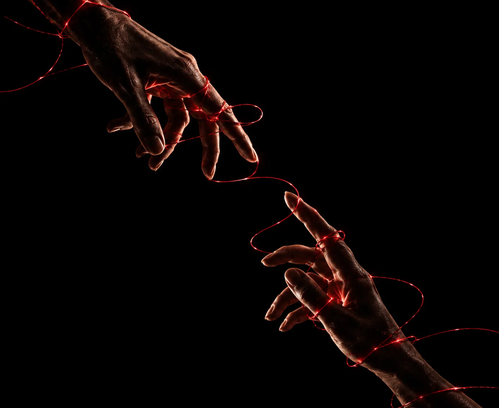
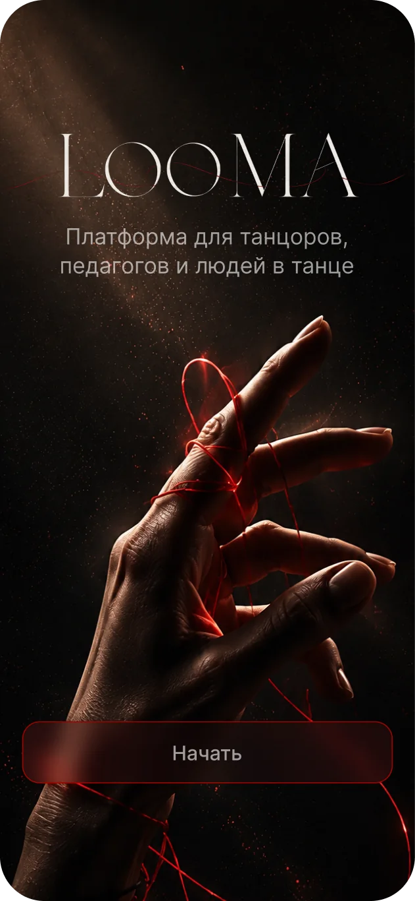
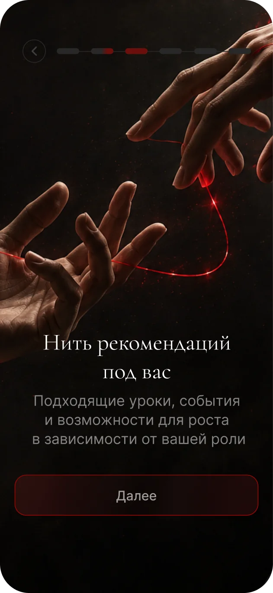
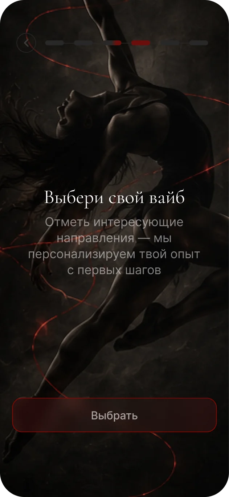
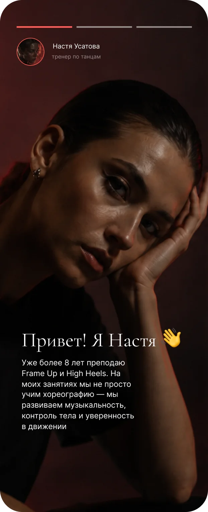
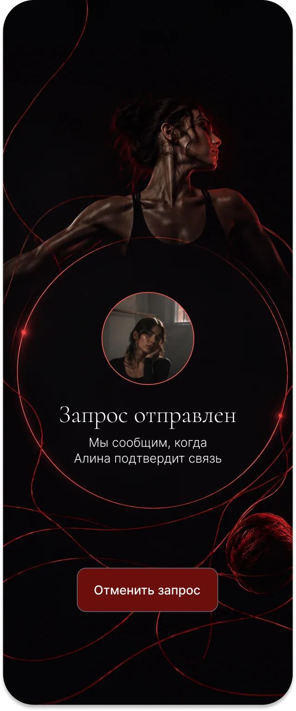
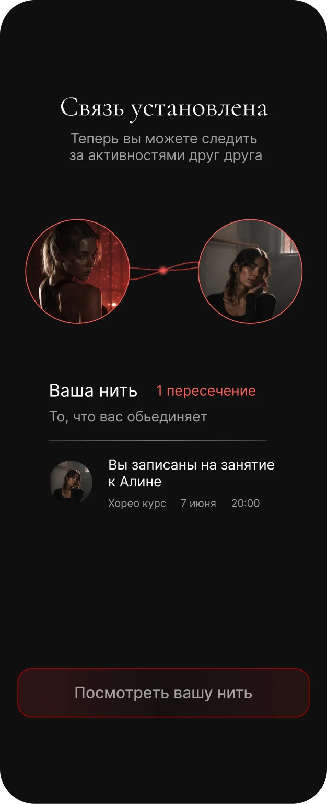
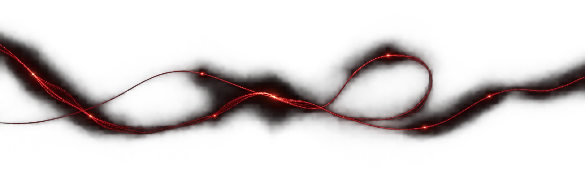
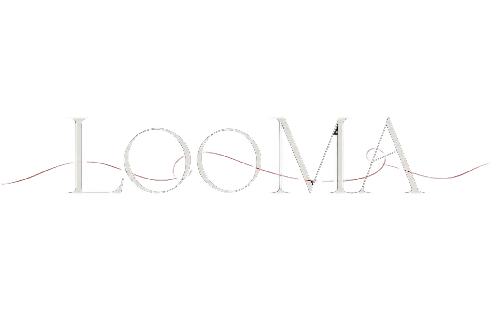

Looma
Одно приложение вместо чатов, афиш и соцсетей студий

Коротко
Занятия, события и люди разбросаны по чатам и соцсетям — танцорам сложно найти своё, а знакомства теряются
Продуктовый дизайнер на всём цикле: проблема и гипотезы, метафора и айдентика, UX/UI, тестирование
Персональная лента занятий, событий и людей и «Ваша нить» — история общих встреч с теми, с кем вы на связи
10 педагогов прошли ключевые сценарии кабинета без подсказок. Узкое место одно, и оно исправлено
Откуда идея
Концепт-проект, который вырос из моего опыта в танцах. Занятия ищешь в чатах, о событиях узнаёшь из соцсетей студий, а знакомства с мастер-классов теряются. Я много раз обсуждала это с другими танцорами в раздевалках и на занятиях — и раз за разом слышала одно и то же.
Танцоры
- Что хотят
- Находить занятия и события под свой стиль и уровень, знакомиться и расти внутри сообщества
- Боль
- Информация разбросана, а о педагоге почти ничего не понятно до первого занятия
Педагоги
- Что хотят
- Набирать учеников, публиковать занятия и рассказывать о себе
- Боль
- Расписание и анонсы приходится вести сразу в нескольких местах
Что должно сработать
И как я бы поняла, что сработало
Главная ценность Looma — человек находит занятие и приходит на него. Связи и нить растут из этих встреч.
Ценность до регистрации
Если сначала показать, что даёт Looma, и собрать интересы, а форму регистрации дать последней, больше новичков дойдут до первой записи.
МетрикаДоля дошедших от старта онбординга до первой записи
Всё в одном месте
Если собрать занятия, события и людей в одной ленте, танцорам не придётся искать по чатам и соцсетям.
МетрикаВремя от открытия приложения до записи
Связь удерживает
Если после общей встречи предложить связь и показать «Вашу нить», люди будут возвращаться в приложение.
МетрикаДоля принятых запросов на связь и возврат через 30 дней
Скоуп MVP
Сфокусировалась на главном пути: найти занятие, прийти и познакомиться. Остальное — в следующие версии.
- Онбординг с выбором ролиБез него не собрать персональную подборку
- Лента «Для тебя»Главная точка входа: занятия, события и люди
- Запись на занятиеКлючевое действие и главная метрика
- Связи и «Ваша нить»Отличает Looma от расписаний и афиш
- Кабинет педагогаБез педагогов нет занятий в ленте
- Чат между пользователямиСначала проверить, нужны ли связи вообще
- Оплата внутри приложенияСложно и дорого; на старте — переход к студии
- Отзывы и рейтинги педагоговНужна база занятий, чтобы было что оценивать
- Уведомления о пересеченияхДобавлю, когда связи начнут расти
Сначала смотрит, потом регистрируется
Каждый сценарий ведёт к одному ключевому действию: записаться, купить билет или установить связь. До визуального дизайна собрала структуру 19 экранов в вайрфреймах, чтобы проверить логику переходов.
- ОнбордингРоль → интро → вайб → направления → регистрация
- Люди и связиЛюди → профиль → запрос на связь → «Ваша нить»
- ЗанятияРасписание → детали занятия → запись → подтверждение
- СобытияЛента событий → детали → купить билет
- Кабинет педагогаМои занятия → новое занятие → публикация
- Профиль ученикаНастройки, мои связи, мои стили







Ключевые решения
Четыре решения, на которых держится продукт. У каждого есть цена.
Ценность до регистрации
Онбординг сначала показывает, что даёт Looma, и собирает направления и вайб. Регистрация появляется последней — когда уже понятно, зачем она нужна.
ЦенаКонтакт пользователя узнаём позже, часть людей уйдёт без регистрации
Две роли в одном аккаунте
Танцор и педагог — часто один и тот же человек. Роль выбирается на старте, её можно сменить или совмещать обе в одном аккаунте.
ЦенаИнтерфейс сложнее — нужно переключение ролей и два набора разделов
Stories вместо анкеты
Педагог рассказывает о себе в коротких видео. Характер и энергию танцора видно ещё до первого занятия.
ЦенаПедагогу нужно снять видео, порог входа для него выше
Связь — только по согласию
Связь появляется, когда её подтверждают оба. После этого открывается «Ваша нить» — история общих занятий и событий.
ЦенаСеть растёт медленнее, зато без спама и навязчивых контактов
Зачем педагогу Looma
Looma приводит педагогу новых учеников и берёт на себя организацию занятий. Для танцоров Looma бесплатна. Зарабатываем на педагогах — тогда, когда приводим им учеников.
Процент с каждой оплаченной записи или билета, пришедших через Looma
Например, 5–10%
Продвижение в ленте «Для тебя», статистика просмотров и записей, больше групп
Например, 990–1 490 ₽ в месяц
Платное размещение фестивалей и батлов наверху ленты
Разовые размещения
Записи в неделю × средний чек = оборот через Looma; оборот × комиссия + Pro = выручка. Цены и проценты — пример для расчёта
Красная нить
Метафора связи между людьми. Каждое новое пересечение — ещё одна точка в общей истории. Из точек складывается линия: связь объединяет людей, а нить хранит историю их встреч.


Юзабилити-тест
Гипотеза: педагог без подсказок справится с ключевыми задачами кабинета — создаст, опубликует, найдёт и отменит занятие. Качественное тестирование кабинета педагога.
| Сценарий | Результат |
|---|---|
| Создать занятие | Справились |
| Опубликовать занятие | Справились, но действие публикации замечали не сразу |
| Найти созданное занятие | Справились |
| Отменить занятие | Справились |
Выводы
- Метафора нити собрала продукт, айдентику и интерфейс вокруг одной идеи
- Тест показал, что сценарии педагога понятны
- Нашла и исправила единственное узкое место в кабинете
- A/B-тест: подборка до регистрации против регистрации сразу. Метрика — доля дошедших до первой записи
- Протестировать путь танцора: поиск занятия, запись и установление связи
- Следить за долей принятых запросов на связь — так проверяется гипотеза «Связь удерживает»
Попробуйте Looma
Онбординг, запись на занятие, связь с человеком и кабинет педагога — всё кликабельно